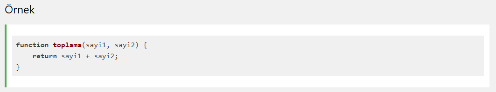
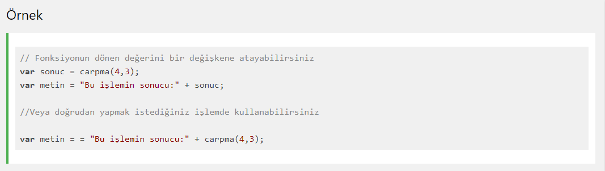

Bir JavaScript fonksiyonu, özel bir işlemi yerine getirmek için tasarlanmış bir blok koddur.
Bir JavaScript fonksiyonu farklı bir kod tarafından çağrıldığı zaman çalışır.

Bir JavaScript fonksiyonu oluşturmak için function anahtar kelimesini kullanırız. Daha sonra bu fonksiyona bir ad veririz.
Fonksiyona ad verildikten, parentez açıp kapatılır () ve en sonunda {} parantezleri arasına fonksiyon çağrıldığında çalışacak kod blogunu yazarız.
Fonksiyon adı harf, sayı, alt çizgi ve dolar işaretini barındırabilir.
Fonksiyon eğer parametre alıyorsa fonksiyon adından sonra () parantezleri arasına parametreler girilir: (parametre1, parametre2)
Fonksiyon parametreleri, fonksiyon çağrıldığında gönderilecek ve fonksiyon tarafından işlenecek verilerdir.
Örneğin, fonksiyona gönderilen iki sayıyı toplayacak bir fonksiyon yazmak istiyorsak, gönderilecek değerler için fonksiyona parametre ekleriz.
Fonksiyon bu parametrelere atanan değerleri alır ve kod bloğu içinde bunları işler.
Fonksiyon parametreleri {} içinde yerel değişkenler gibi kullanılır.
Oluşturulan JavaScript fonksiyonu özel bir şekilde tanımlanmadıysa kendi başına çalışmaz. Fonksiyonu çalıştırmak için onu çağırmanız gerekir.
Bir Fonksiyon şu durumlarda çalışır:
Bir JavaScript fonksiyonu kendine verilen görevi yerine getirdikten sonra değer döndürebilir.
Bazı fonksiyonlar içindeki kod blogunu işler ve görevi sona erer.
Bazı fonksiyonlar da kod blogunu işler ve bu işlemin donunda çağrıldığı noktaya bir değer döndürür.
Yukarıdaki örnekte ilk satırda sonuc adında bir değişken tanımlanıyor.
Yine aynı satırda carpma(4,3) fonksiyonu çağırılıyor / çalıştırılıyor. Bu fonksiyon iki parametre alıyor: 4,3 carpma() fonksiyonu iki sayıyı çarpacak ve çıkan sonucu yani 12 değerini sonuc değişkenine atayacaktır.
JavaScript fonksiyonun sadece adını yazarsanız geriye fonksiyon nesnesi döner.
Fonksiyonu () simgeleri ile çağırırsanız size sonuç döner.
Bir fonksiyonun dönen değeri doğrudan bir değişkene atanabilir.
Bunun yanında fonksiyon string birleştirme ya da matematiksel işlemlerde doğrudan da kullanılabilir.
